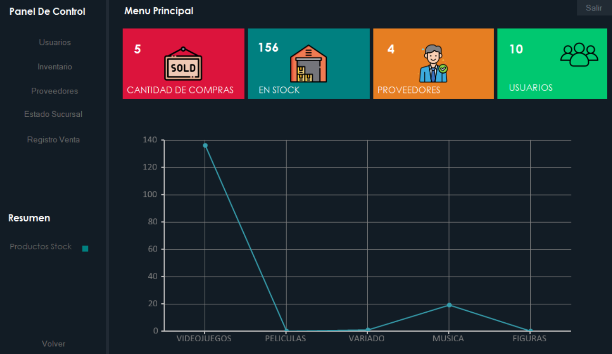
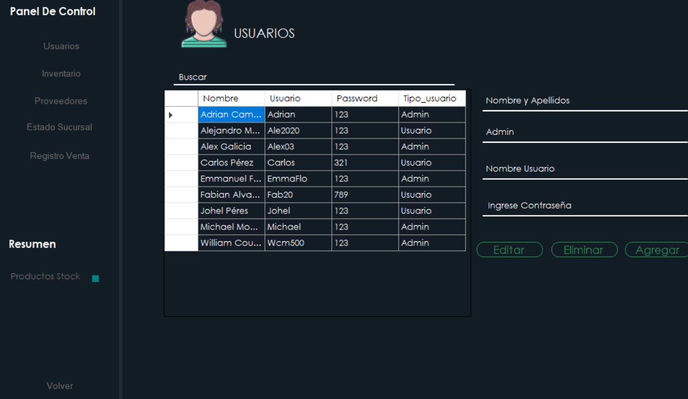
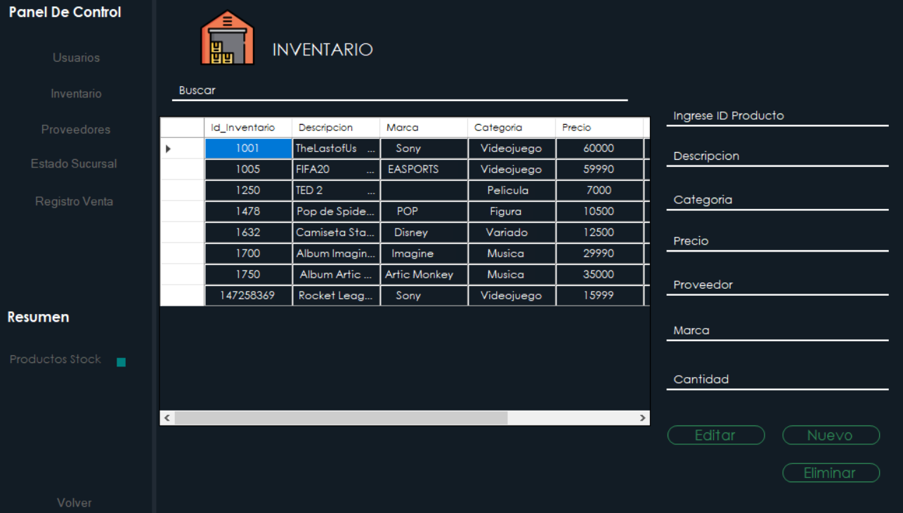
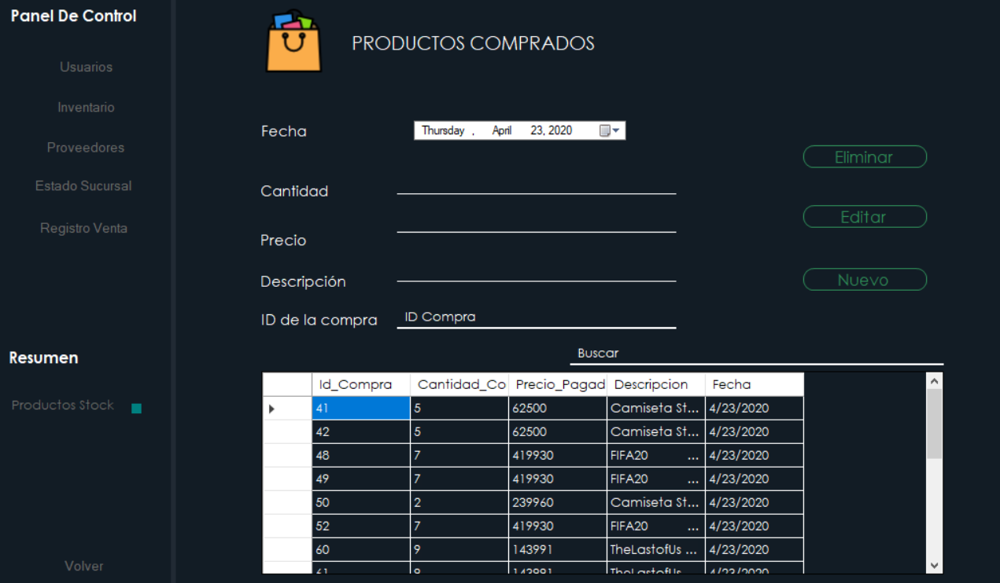

Cuenta de Administrador:
A este sector de la tienda solo se puede acceder si se tiene una cuenta de administrador,
la cuál solo puede ser brindada por otro administrador. Al entrar se muestra lo siguiente:

Como se puede apreciar, se presentan varios datos generales como la cantidad de compras,
el total de productos en stock, la cantidad de proveedores, y cuantos usuarios hay.
A la izquierda hay varios botones, el de usuarios muestra una tabla con los datos de los usuarios
ingresados en la base de datos y si son administradores o usuarios normales.

Es desde aquí que se pueden crear más administradores o modificar datos de usuarios,
o eliminarlos. Con solo escribir el Nombre de Usuario es suficiente para que el programa pueda borrarlo.

El resto de los botones principales van mostrando funciones similares,
modificando sus respectivas tablas de la base de datos. En inventario al mover la
barra desplazadora debajo de la tabla se pueden ver más detalles de los productos,
incluyendo la cantidad que hay de cada uno, estas últimas celdas cambian de color dependiendo
de cuanto queda en stock (verde mucho, naranja poco, rojo casi (o) agotado.
En la tabla del registro de ventas se van presentando las compras realizadas y sus datos,
como qué se compró, cuántos, cobro total, fecha.

En esquina inferior izquierda se presenta el botón para salirse del menú de administrado y volver al login.